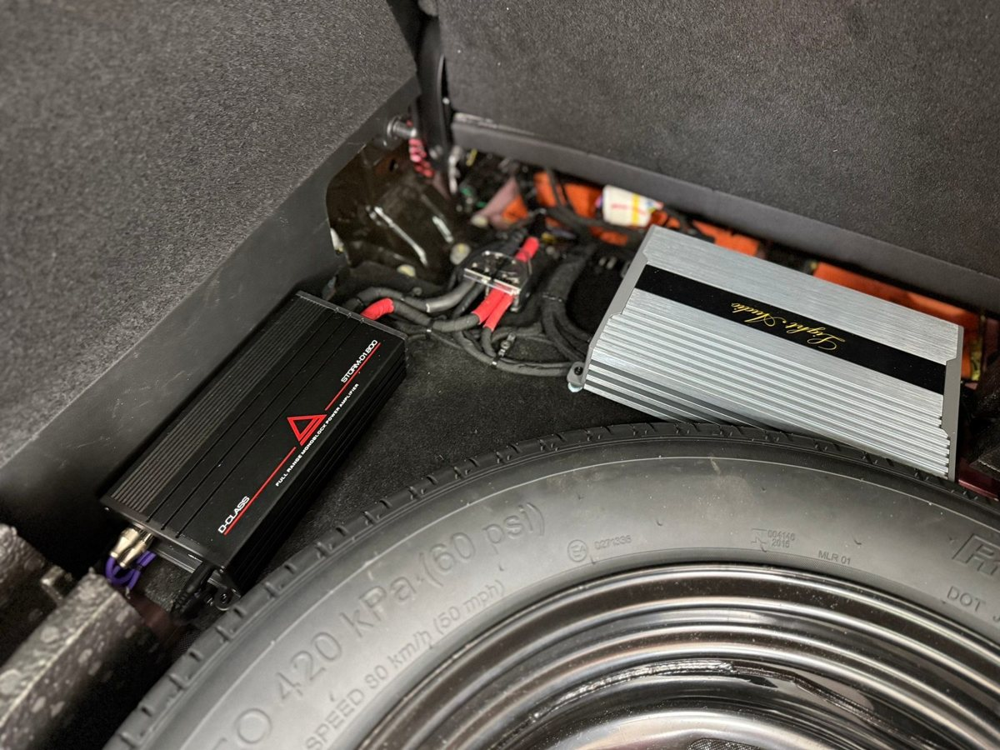
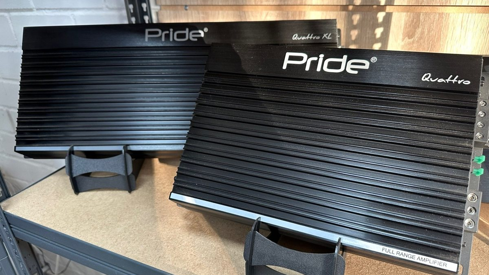
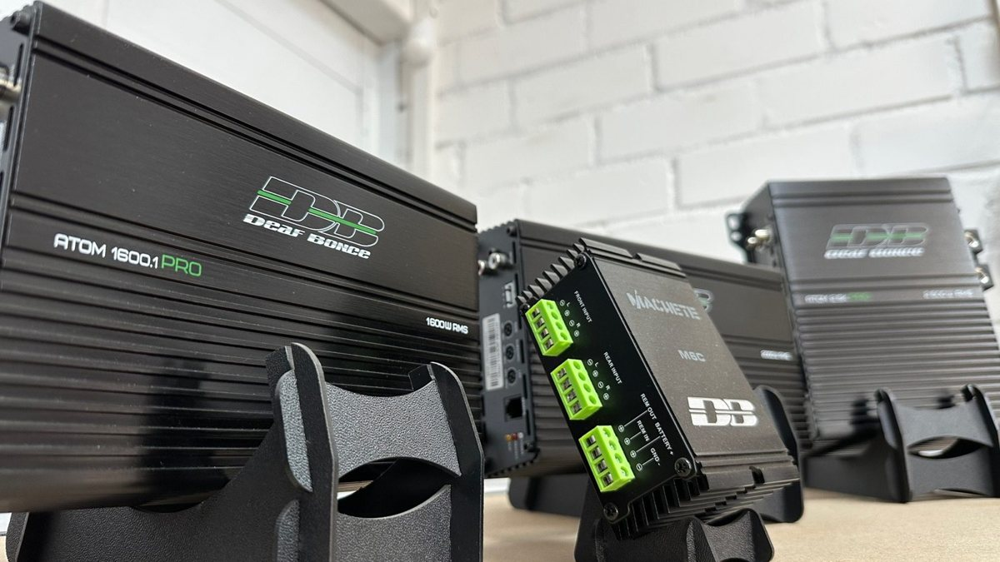

Вечер пятницы, трасса М8 в сторону Москвы, темно уже с пяти. Шины гудят по мокрому асфальту, вы прибавляете громкость, потом ещё. Голос певца тонет в шуме, а когда всё-таки пробивается, начинает резать уши. Убавляете – и снова ничего не слышно. Полчаса такой качели, и к Ростову голова уже тяжёлая.
При этом в городе всё в порядке. На светофоре на Московском проспекте магнитола качает так, что оборачиваются соседи. Поэтому мысль про усилитель кажется странной: куда громче-то?

Магнитола действительно может играть громко. Вопрос в том, как она звучит на этой громкости. Встроенный усилитель в головном устройстве небольшой, он делит место и питание со всей остальной электроникой. Пока вы слушаете вполголоса, ему хватает. Когда ручка уходит в верхнюю треть, запас кончается, и сигнал начинает искажаться. Это называют клиппингом: верхушки звуковой волны срезаются, и вместо музыки выходит жёсткий, грязный звук.
Ухо замечает это не как хрип, а как усталость. Хочется сделать тише, хотя тише уже ничего не слышно. Та самая качель на трассе – обычно как раз оно.
Усилитель – это прежде всего запас. Он берёт сигнал от магнитолы и раскачивает динамики сам, со своим питанием прямо от аккумулятора. На громкости, где магнитола уже задыхается, у него ещё есть резерв, и музыка остаётся ровной: голос отдельно, бас отдельно, ничего не слипается.
Отсюда эффект, который многих удивляет после установки: вы начинаете слушать тише. Не потому что надоело, а потому что всё слышно и так. Пропадает желание добавить ещё чуть-чуть, чтобы пробилось сквозь гул.

Есть и обратная сторона. Если штатные динамики слабые, усилитель не сделает их хорошими. Он даст им больше мощности, и они либо так и будут звучать бумажно, либо начнут хрипеть уже по своей причине. Иногда честнее сначала поменять акустику, а усилитель добавить вторым шагом.
Второй момент – установка. Усилителю нужен толстый провод питания от аккумулятора, предохранитель рядом с клеммой, надёжная масса. Сэкономите на проводке – получите помехи, вой генератора в колонках, а в худшем случае греющийся провод под обшивкой. Это не та работа, которую стоит делать в гараже по ролику из интернета.
И третье: если музыка у вас фоном в городских пробках, усилитель, скорее всего, не нужен. Деньги разумнее потратить на динамики или шумоизоляцию дверей.
Прежде чем что-то покупать, проведите простой опыт. Поставьте трек, который хорошо знаете. Сбросьте эквалайзер в ноль, выключите тонкомпенсацию и прочие улучшайзеры. Медленно поднимайте громкость и запомните, где звук становится жёстким и неприятным. Если это происходит раньше, чем вам комфортно на трассе, магнитоле не хватает запаса, и усилитель в машину – как раз ваш случай.
Если же звук плохой уже на средней громкости, начинать надо с динамиков, а не с усилителя.
Запишите марку, модель и год машины, что стоит сейчас – штатная магнитола или уже другая, менялись ли динамики. И главное – как вы слушаете: громко на трассе, фоном в пробках, с басом или без.
Мы в Ярославле – студия «Автостиль», проспект Октября, 82б. Мастера проводят демонстрации, и разницу с усилителем и без можно услышать до покупки, а не поверить на слово. Подробности – страница про автозвук, телефон +7 902 220-75-55.